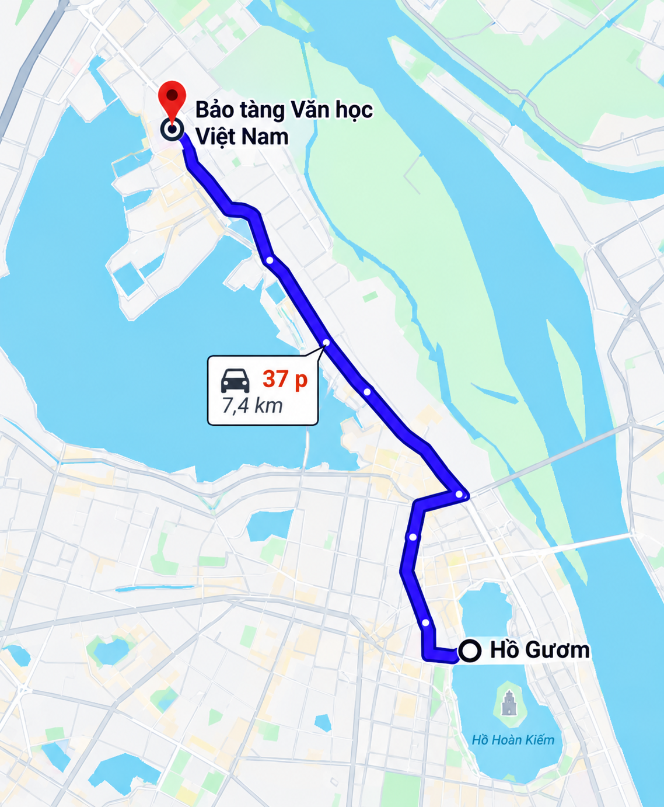
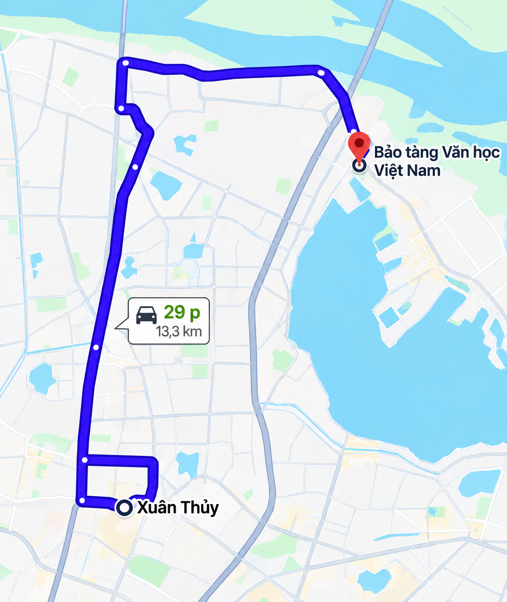
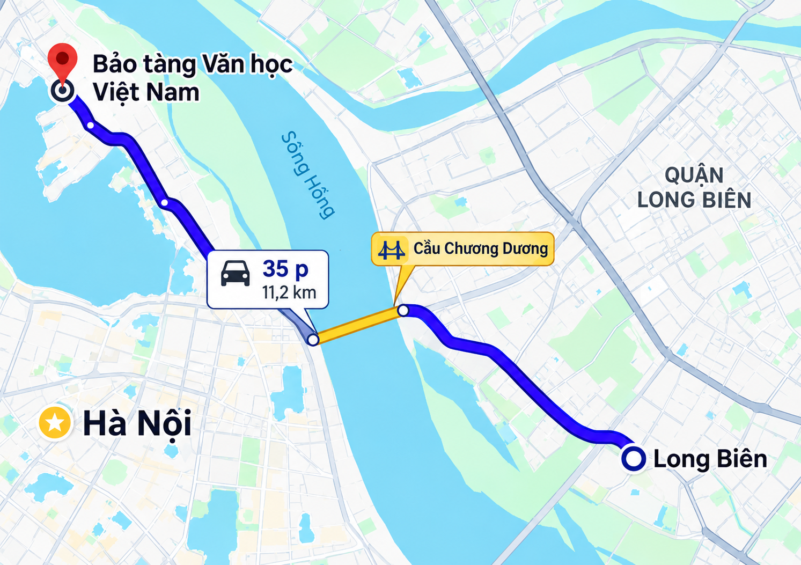
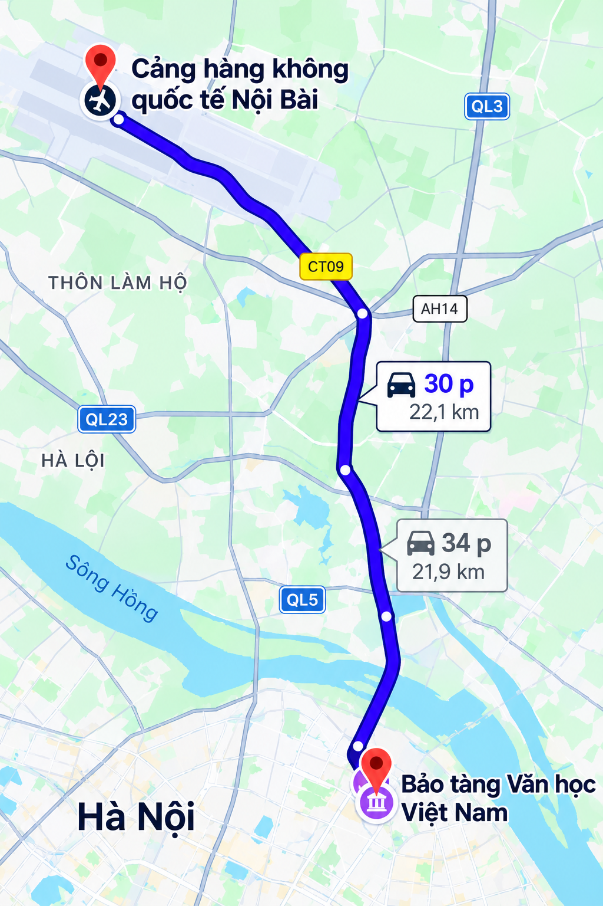

Trong bài
Nếu bạn đang tìm kiếm một địa điểm để tìm hiểu lịch sử văn học dân tộc, chiêm ngưỡng tư liệu, hiện vật và những kỷ vật gắn với các nhà văn, nhà thơ Việt Nam, Bảo tàng Văn học Việt Nam là một điểm đến đáng để khám phá tại Hà Nội.
Bảo tàng Văn học Việt Nam ở đâu?
Bảo tàng nằm tại số 275 đường Âu Cơ, phường Tây Hồ, Hà Nội, trong khu vực trước đây thuộc phường Quảng An, quận Tây Hồ. Địa điểm này nằm trong ngõ 275 Âu Cơ, gần khu vực Nhật Tân và Hồ Tây, tương đối thuận tiện di chuyển từ nhiều khu vực trung tâm thành phố. Thông tin địa chỉ hiện được ghi nhận tại ngõ 275 đường Âu Cơ; các nguồn trước đây cũng xác định bảo tàng nằm tại khu vực Quảng An, quận Tây Hồ.

Bảo tàng được xây dựng trên khu đất từng là Trường Viết văn Quảng Bá của Hội Nhà văn Việt Nam, một địa điểm gắn với nhiều hoạt động của giới văn chương. Không gian bảo tàng hiện lưu giữ và giới thiệu một khối lượng lớn tài liệu, hiện vật liên quan đến quá trình hình thành và phát triển của văn học Việt Nam qua nhiều thời kỳ.
Điểm đáng chú ý là bảo tàng không chỉ tập trung vào sách hay bản thảo. Người tham quan còn có thể tìm hiểu những kỷ vật cá nhân, hình ảnh, mô hình không gian sáng tác, tư liệu về các tác giả và khu trưng bày ngoài trời với nhiều tượng danh nhân văn học.
Đường đi đến Bảo tàng Văn học Việt Nam từ trung tâm Hà Nội
Tùy vị trí xuất phát, bạn có thể lựa chọn xe máy, ô tô, taxi hoặc xe công nghệ. Do bảo tàng nằm trên đường Âu Cơ, việc di chuyển tương đối thuận tiện nếu xác định được hướng đi về khu vực Hồ Tây – Nhật Tân.
1. Đi từ khu vực Hồ Gươm

Nếu xuất phát từ Hồ Gươm, bạn có thể đi theo hướng Hàng Đào – Tràng Thi – Điện Biên Phủ – Nguyễn Tri Phương – Cửa Bắc - Yên Phụ – Nghi Tàm – Âu Cơ.
Sau khi đi vào đường Âu Cơ, tiếp tục di chuyển theo hướng Nhật Tân và tìm ngõ 275 Âu Cơ. Đi vào ngõ, bạn tiếp tục theo biển chỉ dẫn đến Bảo tàng Văn học Việt Nam.
Đây là một trong những hướng phù hợp với du khách lần đầu đến bảo tàng từ khu vực trung tâm. Tuy nhiên, tùy thời điểm và tình trạng giao thông, ứng dụng bản đồ có thể đề xuất tuyến đường khác nhanh hơn.
2. Đi từ khu vực Cầu Giấy

Từ Cầu Giấy, bạn có thể di chuyển theo hướng Xuân Thủy – Phạm Văn Đồng - An Dương Vương – Âu Cơ.
Theo hướng An Dương Vương, bạn tiếp tục về phía đường Âu Cơ rồi tìm ngõ 275. Đây là lựa chọn tương đối thuận tiện đối với những người ở khu vực phía Tây Hà Nội.
Với người sử dụng xe máy, nên kiểm tra trước tình trạng giao thông và lựa chọn tuyến đường phù hợp với thời điểm di chuyển. Đặc biệt vào giờ cao điểm, thời gian đi thực tế có thể thay đổi đáng kể.
3. Đi từ khu vực Long Biên

Nếu xuất phát từ Long Biên, tuyến đường qua cầu Chương Dương hoặc cầu Nhật Tân đều có thể được cân nhắc tùy vị trí cụ thể.
Với những người ở phía Đông Hà Nội, đi qua cầu Nhật Tân rồi kết nối với đường Âu Cơ có thể là phương án thuận tiện khi điểm xuất phát nằm gần khu vực phía Bắc thành phố. Sau khi đến đường Âu Cơ, bạn tìm ngõ 275 Âu Cơ để vào bảo tàng.
4. Đi từ sân bay Nội Bài

Đối với du khách từ sân bay Nội Bài, Bảo tàng Văn học Việt Nam nằm ở hướng vào trung tâm Hà Nội. Bạn có thể đi theo hướng cầu Nhật Tân – Võ Chí Công – Âu Cơ, sau đó tìm ngõ 275 Âu Cơ.
Đây cũng là tuyến phù hợp nếu bạn muốn kết hợp tham quan bảo tàng với một số địa điểm ở khu vực Tây Hồ, Nhật Tân trước hoặc sau chuyến bay.
Đi Bảo tàng Văn học Việt Nam bằng phương tiện gì?
Xe máy
Xe máy là phương tiện phù hợp nếu bạn xuất phát từ các quận nội thành Hà Nội và muốn chủ động về thời gian. Bạn có thể sử dụng ứng dụng bản đồ để tìm tuyến đường ngắn nhất đến 275 Âu Cơ, sau đó đi vào ngõ 275 để đến bảo tàng.
Ưu điểm của xe máy là dễ di chuyển trong các tuyến đường nhỏ và thuận tiện kết hợp tham quan những địa điểm khác quanh Hồ Tây, Nhật Tân.
Ô tô cá nhân
Nếu đi ô tô, bạn nên kiểm tra trước điều kiện đỗ xe tại thời điểm tham quan. Khu vực Âu Cơ có mật độ giao thông khá cao, đặc biệt vào những khung giờ đông phương tiện.
Trong trường hợp đi theo nhóm gia đình hoặc nhóm bạn, ô tô có thể thuận tiện hơn nhưng nên chủ động thời gian để tìm vị trí đỗ xe phù hợp.
Xe buýt
Nếu muốn tiết kiệm chi phí, bạn có thể cân nhắc phương tiện công cộng. Tuy nhiên, do tuyến xe buýt và điểm dừng có thể được điều chỉnh theo từng thời điểm, nên kiểm tra tuyến đang hoạt động trên ứng dụng giao thông trước khi khởi hành.
Một cách đơn giản là tìm điểm đến Bảo tàng Văn học Việt Nam – 275 Âu Cơ trên ứng dụng bản đồ, chọn biểu tượng phương tiện công cộng và xem tuyến xe phù hợp với vị trí xuất phát.
Taxi và xe công nghệ
Đây là phương án thuận tiện nhất với khách du lịch, sinh viên hoặc những người lần đầu đến khu vực này. Bạn không cần xác định nhiều tuyến đường mà chỉ cần nhập đúng tên bảo tàng hoặc địa chỉ.
Địa chỉ được các nguồn thông tin hiện nay ghi nhận tại 275 Âu Cơ, Tây Hồ, Hà Nội.
Kết hợp tham quan các địa điểm quanh Hồ Tây
Một lợi thế của Bảo tàng Văn học Việt Nam là vị trí nằm tại khu vực Tây Hồ. Sau khi tham quan bảo tàng, bạn có thể tiếp tục khám phá Hồ Tây, khu vực Nhật Tân hoặc các điểm văn hóa, cảnh quan lân cận.
Nếu đi vào những ngày thời tiết đẹp, một lịch trình kết hợp giữa tham quan bảo tàng và khám phá khu vực Hồ Tây sẽ giúp chuyến đi đa dạng hơn.
Một số lưu ý khi tham quan
Trước khi đến, bạn nên:
- Kiểm tra giờ mở cửa và thông tin hoạt động mới nhất.
- Nhập đúng địa chỉ 275 Âu Cơ, Tây Hồ, Hà Nội khi sử dụng ứng dụng bản đồ.
- Nếu đi xe cá nhân, nên chủ động tìm hiểu khu vực gửi xe.
- Dành đủ thời gian để tham quan cả khu trưng bày trong nhà và ngoài trời.
- Giữ trật tự và tuân thủ quy định khi tham quan hiện vật, tư liệu.
- Nếu đi theo nhóm hoặc phục vụ mục đích học tập, nên liên hệ trước để có sự chuẩn bị phù hợp.
Bảo tàng Văn học Việt Nam nằm tại 275 Âu Cơ, Tây Hồ, Hà Nội, trong ngõ 275 Âu Cơ. Với vị trí thuận tiện và hệ thống trưng bày phong phú, đây là điểm đến phù hợp cho những ai yêu văn học, lịch sử và văn hóa Việt Nam. Trước khi đi, bạn nên kiểm tra giờ mở cửa, lựa chọn phương tiện phù hợp và xác định trước tuyến đường để chuyến tham quan diễn ra thuận lợi.
Bảo tàng Văn học Việt Nam